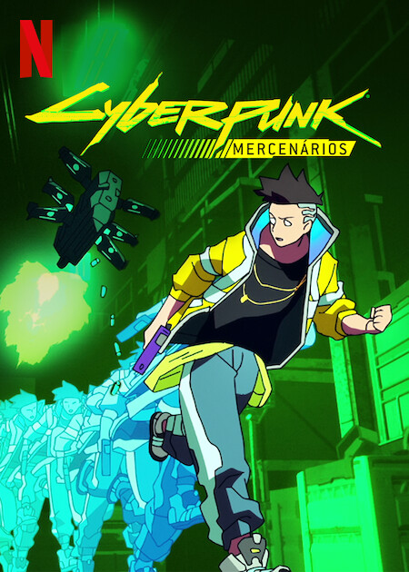
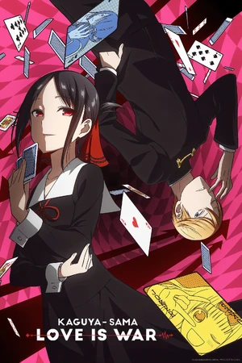
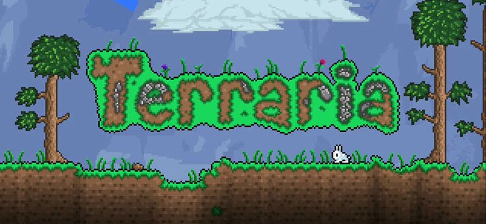
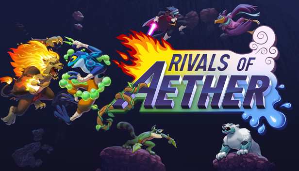

Yuki
Aspiring Web Dev / Yuumi fan
Top Animes ~
-
#1 - Jujutsu Kaisen
-
#2 - Re:Zero
-
#3 - Mob Psycho 100
-
#4 - Cyberpunk Edgerunners
 -
#5 - Love is War



Games ~
-
Celeste

Yuki has always enjoyed platforming games. Growing up playing Mario and all that yk and this small indie game happens to be the favorite of them all. Yuki has at this point 100% the game twice over with a total of 100+ hours which is why it holds a special place in Yuki's heart.
-
League of Legends

Yuki has played League of Legends since 2021 and grown to enjoy it with friends. When Yuki started Yuki quickly grew attached to the magical cat "Yuumi" playing her more than any character. If not for Yuumi, Yuki would have probably quit the game a long time ago. As of now Yuki is currently Emerald II in League's ranked mode.
-
Terraria
Yuki has played terraria since a very young age and has always very much enjoyed the gameplay loop. From 3Ds to PC with or without friends. At this point Yuki has played through the game countless times and amassed nearly 1k hours on just the steam version of the game alone!
-
Honkai Star Rail

Star Rail is Yuki's current obsession. Really the only gacha game Yuki plays at this point. But Yuki is sure to login every day and has very much enjoyed the recent Penacony expansion. Yuki's favorite character is easily Topaz and Numby.
-
Rivals of Aether
Rivals of Aether is Yuki's favorite platform fighter ever. It has always just felt very good for Yuki to play but the smaller playerbase keeps Yuki from playing more. Yuki mains Clairen and in general prefers swordfighters in games such as Rivals of Aether. Yuki is very excited for the sequel and even preordered it on kickstarter!